La vicelehendakari , Idoia Zenarruzabeitia , reiteró hoy la acusación al ministerio de Interior de " ocultar información " sobre ETA al Gobierno Vasco , pese a que ayer el ministro Jaime Mayor Oreja aseguró en el Congreso que se había facilitado la información conveniente.
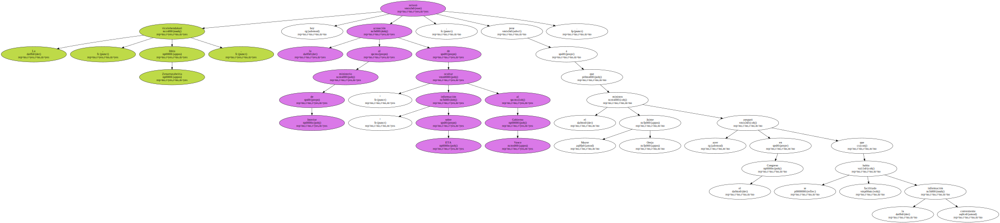En una entrevista en Radio Euskadi recogida por Efe , la vicelehendakari afirmó que el Gobierno Vasco " aún no ha recibido " del ministerio la información sobre el comando " Basurde " de ETA pese a haberla solicitado oficialmente en dos ocasiones.
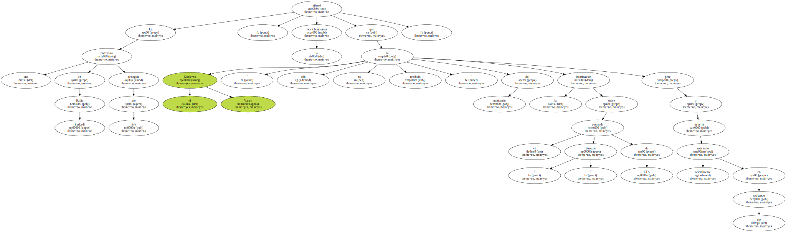" No es falta de información , es ocultación de información " , dijo Zenarruzabeitia , para quien la comparecencia de ayer de Mayor Oreja " no fue de recibo " porque en vez de " responder detalladamente " a la interpelación del PNV se dedicó a " la descalificación de un grupo político y a hablar de cuestiones que no tienen nada que ver , utilizó la política del chipirón de responder atacando ".
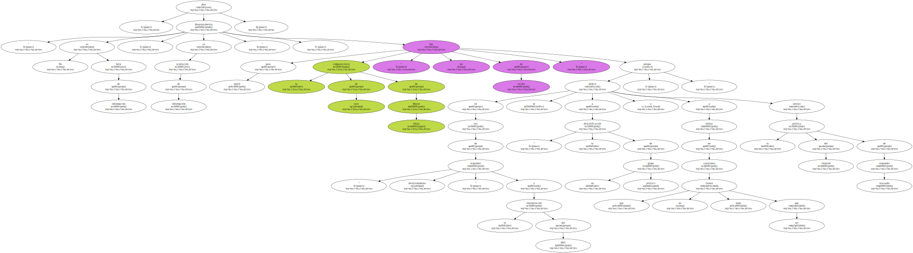La vicelehendakari sostuvo que el Partido Popular mantiene una " dinámica de deterioro y deslegitimación " de las instituciones vascas , cuyo " colofón " fueron los insultos del parlamentario Ricardo Hueso al lehendakari , Juan José Ibarretxe , en el pleno del pasado viernes.
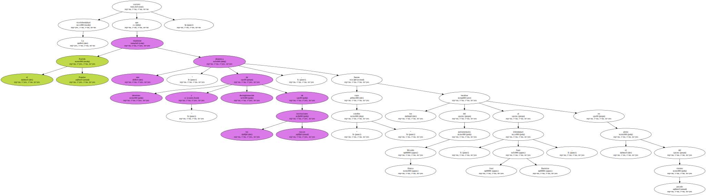" No fue una anécdota , fue un atentado a las instituciones de este país , al Parlamento y al lehendakari , y no fue un hecho aislado , sino la culminación de una dinámica de deterioro y deslegitimación de las instituciones por parte del PP " , comentó.
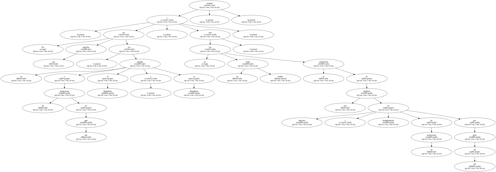La vicelehendakari reconoció que el enfrentamiento entre nacionalistas y populares está afectando a las relaciones institucionales entre los Gobiernos vasco y central , en las que únicamente " se guardan las formas " , de lo que responsabilizó al PP.
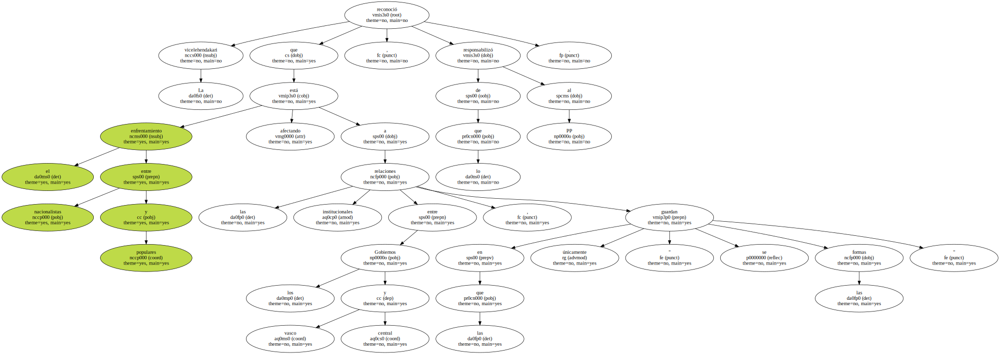En este contexto , vio " difíciles " las negociaciones para la renovación del Concierto Económico , que se deben abordar antes de que acabe el próximo año , y dijo que " todos los gestos y pasos " del PP evidencian una " nula voluntad de transferir las materias pendientes recogidas en el Estatuto " de Gernika.
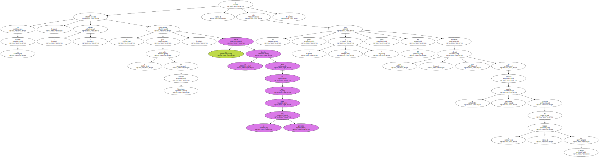El senador del PSOE por Cuenca y viceportavoz socialista de la Comisión de Peticiones del Senado , Luis Ayllón , ha solicitado la comparecencia en la Cámara Alta del ministro de Fomento , Francisco Alvarez Cascos , con el fin de que informe sobre el proyecto de línea de AVE Madrid-Levante.
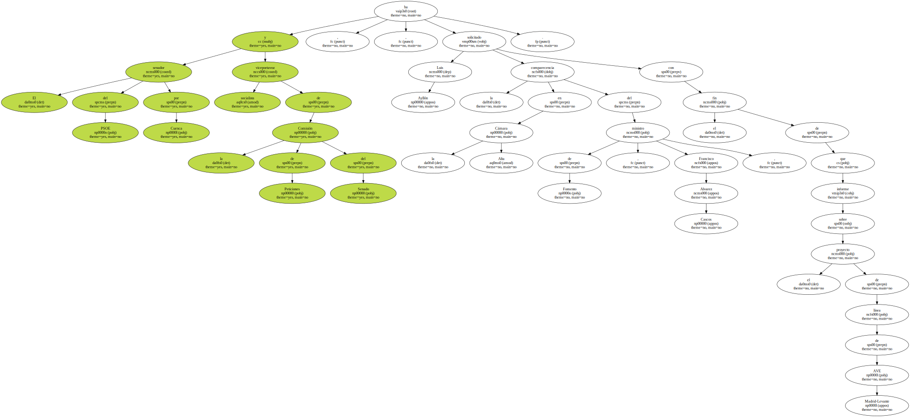Ayllón ha presentado un escrito con esta petición , firmado por él mismo y otros senadores del PSOE que pertenecen a las circunscripciones por las que discurrirá el trazado del futuro AVE , informó hoy en una nota de prensa el Grupo Socialista en el Senado.
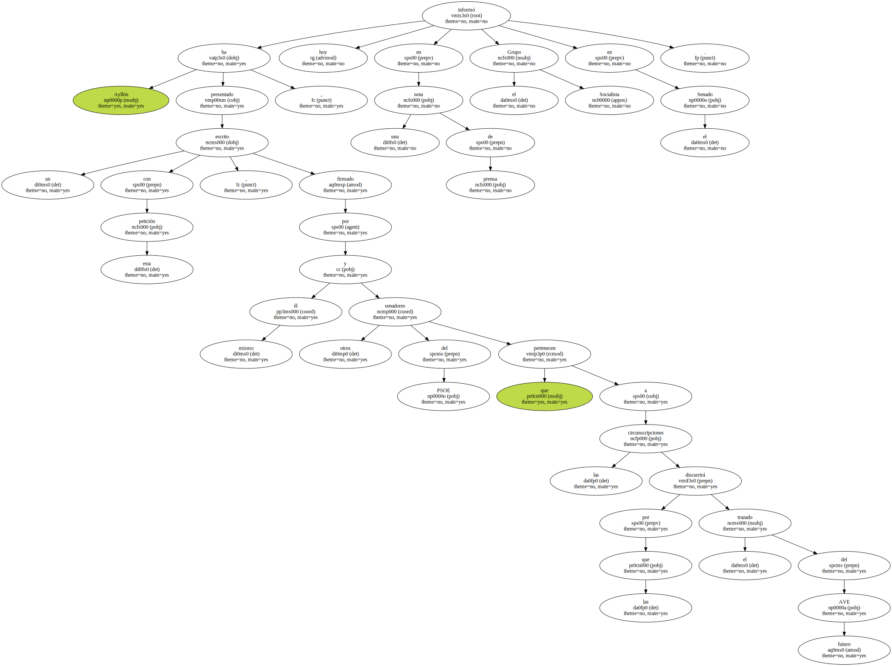Tras la presentación de este escrito , el titular de Fomento deberá comparecer ante la comisión competente del Senado , lo que permitirá a los firmantes conocer a través de Alvárez Cascos cuál será el trazado definitivo de la futura red y las perspectivas que sobre esta tiene el responsable de este departamento ministerial.
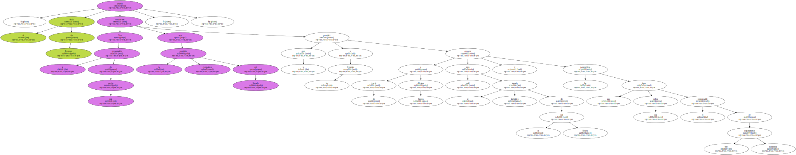En este sentido , los senadores socialistas recuerdan que ya hace un mes que terminaron los plazos de alegaciones públicas de los distintos trazados del futuro AVE , por lo que desean saber si el estado actual del proyecto se corresponde con las numerosas manifestaciones y promesas que el PP realizó durante la pasada campaña electoral.

Además de Ayllón , los senadores firmantes de la petición son Juan Pablo Herranz y Antonio Collado , de Castilla-La Mancha ; Francisco Arnau , Segundo Bru y Angel Franco , de Valencia , y María Antonia Martínez y Manuel Hurtado , de Murcia.
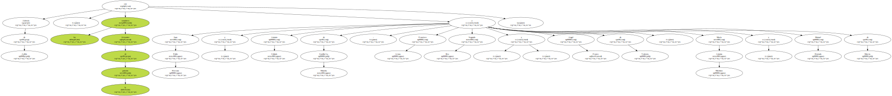La salud de las 31 personas retenidas en el Parlamento desde el 19 de mayo por un grupo de hombres armados que intentan consolidar una intentona golpista ha comenzado a resentirse por la tensión en la que viven , según un equipo de médicos que los pudo visitar hoy jueves.
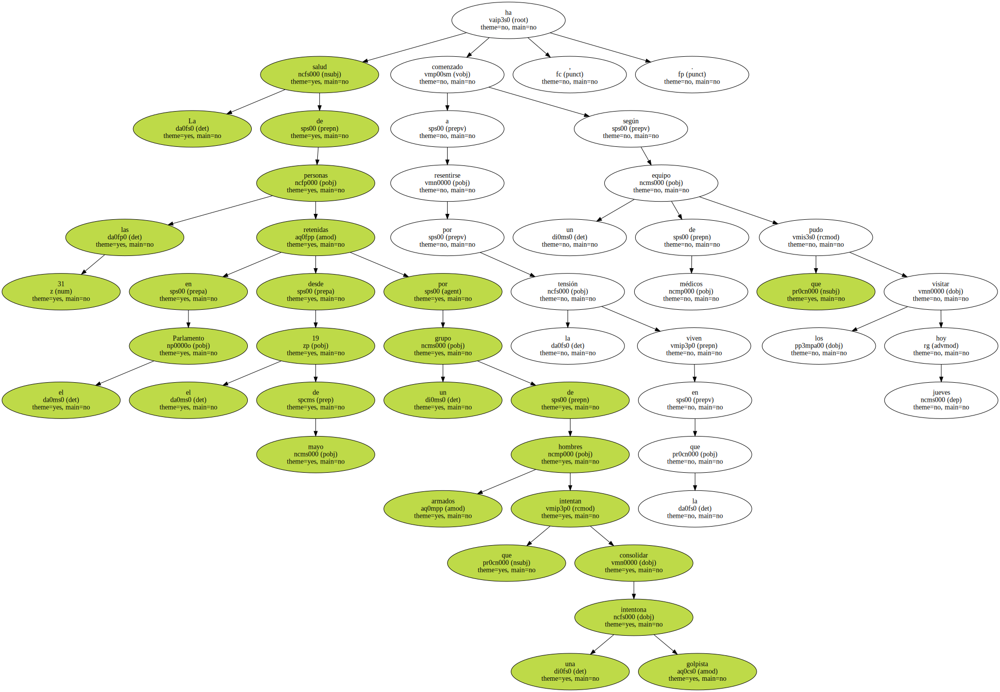El doctor Bhagat Ram , médico privado del depuesto primer ministro fiyiano , Mehnedra Chaudhry , dijo que varios de los rehenes llevaban días con molestias y les ha dado algo para que descansasen , según Radio Fiyi.
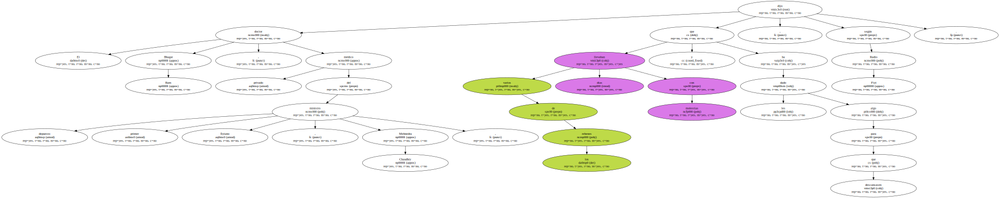Por su parte , un grupo médico de la Cruz Roja manifestó que lo que más afectaba a los cautivos , entre los que se encuentran cinco mujeres , es el ambiente deprimente en el que viven.
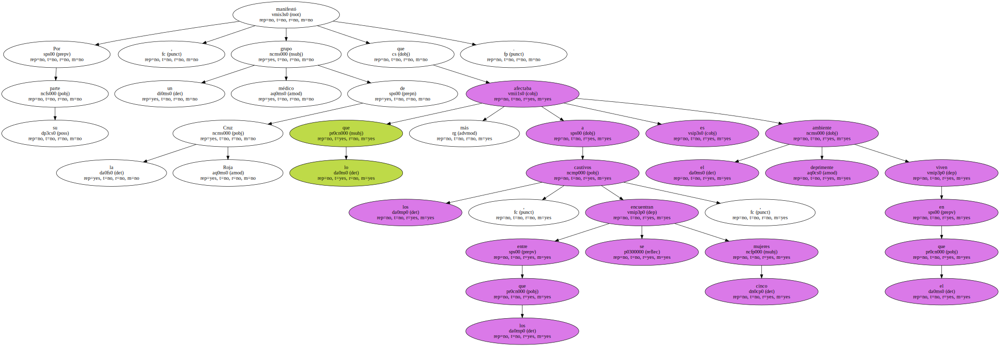Chaudhry y trece ministros de su Gabinete , además del Fiscal General y diputados y asistentes personales , forman el grupo de personas retenidas por la fuerza en el Parlamento.
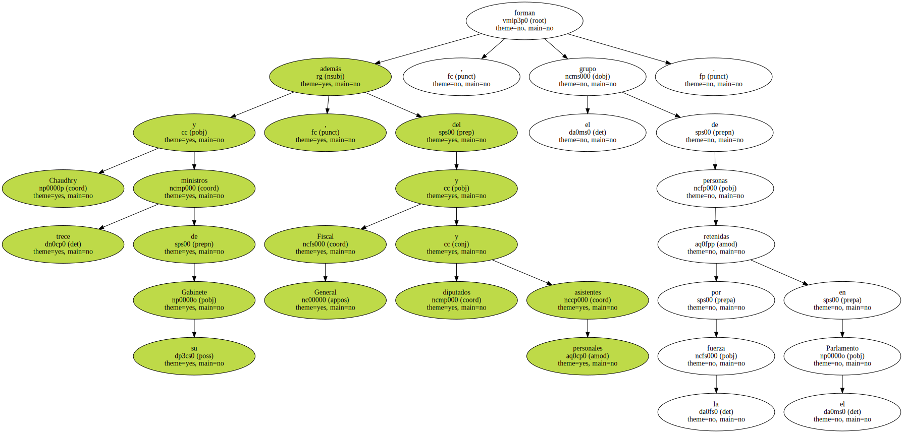